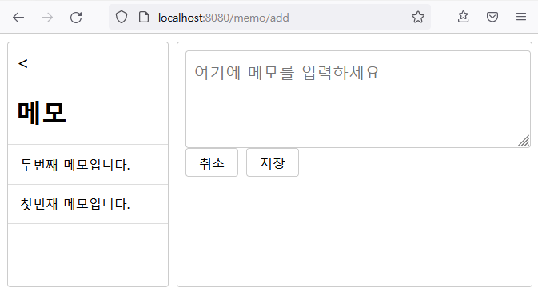

<div id="root">
<div style="display: flex; flex: 1 1 0%; margin: 10px;">
<aside style="width: 200px; border: 1px solid rgb(204, 204, 204); margin-right: 10px; border-radius: 4px;">
<h1 style="padding: 0px 10px;">폴더</h1>
<ul style="list-style: none; padding-left: 0px;">
<li style="padding: 15px; border-bottom: 1px solid rgb(221, 221, 221); border-top: 1px solid rgb(221, 221, 221);">
<a href="/memo">메모</a>
</li>
<li style="padding: 15px; border-bottom: 1px solid rgb(221, 221, 221); border-top: none;">
<a href="/trash">휴지통</a>
</li>
</ul>
</aside>
<main style="flex: 1 1 0%; overflow: auto; border: 1px solid rgb(204, 204, 204); border-radius: 4px;">
<div style="margin: 10px;">
<a href="/memo/add" style="display: inline-block; border: 1px solid rgb(204, 204, 204); border-radius: 4px; margin: 0px 10px 10px 0px; padding: 8px 16px; width: auto; overflow: visible; background: transparent; color: inherit; text-decoration: none;">
새로운 메모
</a>
</div>
</main>
</div>
</div>
<Layout>
<Sidebar>
// 사이드바: 메모장, 휴지통 링크를 위치한다
<SidebarTitle>폴더</SidebarTitle>
// 메뉴 목록
<List>
<ListItem>
<Link to="/memo">메모</Link>
</ListItem>
<ListItem>
<Link to="/trash">휴지통</Link>
</ListItem>
</List>
</Sidebar>
<Main>
// 메인: 메모 생성 버튼을 위치한다
<Link to="/memo/add">새로운 메모</Link>
</Main>
</Layout>
$ touch ./src/pages/Home.js \
./src/components/Layout.js \
./src/components/List.js \
./src/components/ListItem.js \
./src/components/Main.js \
./src/components/Sidebar.js \
./src/components/SidebarTitle.js
<div id="root">
<div style="display: flex; flex: 1 1 0%; margin: 10px">
<aside style=" width: 200px; border: 1px solid rgb(204, 204, 204); margin-right: 10px; border-radius: 4px;">
<a href="/" style=" text-decoration: none; font-size: 24px; padding: 10px; display: block; "><</a>
<h1 style="padding: 0px 10px">메모</h1>
<ul style="list-style: none; padding-left: 0px">
<li style=" padding: 15px; border-bottom: 1px solid rgb(221, 221, 221); border-top: 1px solid rgb(221, 221, 221); ">
<a href="/memo/2">두번째 메모입니다.</a>
</li>
<li style=" padding: 15px; border-bottom: 1px solid rgb(221, 221, 221); border-top: none; ">
<a href="/memo/1">첫번재 메모입니다.</a>
</li>
</ul>
</aside>
<main style=" flex: 1 1 0%; overflow: auto; border: 1px solid rgb(204, 204, 204); border-radius: 4px;">
<div style="margin: 10px">
<a href="/memo/add" style=" display: inline-block; border: 1px solid rgb(204, 204, 204); border-radius: 4px; margin: 0px 10px 10px 0px; padding: 8px 16px; width: auto; overflow: visible; background: transparent; color: inherit; text-decoration: none; ">
새로운 메모
</a>
<button style=" display: inline-block; border: 1px solid rgb(204, 204, 204); border-radius: 4px; margin: 0px 10px 10px 0px; padding: 8px 16px; width: auto; overflow: visible; background: transparent; color: inherit; ">
삭제
</button>
<div style="border-top: 1px solid rgb(221, 221, 221); padding-top: 10px">
<div style="margin-bottom: 15px">
<span style="color: rgb(170, 170, 170)">
2021. 9. 11. 오전 8:58:54
</span>
</div>
<div>
두번째 메모입니다.
</div>
</div>
</div>
</main>
</div>
</div>
$ touch ./src/pages/Home.js \
./src/components/Layout.js \
./src/components/List.js \
./src/components/ListItem.js \
./src/components/Main.js \
./src/components/Sidebar.js \
./src/components/SidebarTitle.js
<div style="display: flex; flex: 1 1 0%; margin: 10px;">
<aside style="width: 200px; border: 1px solid rgb(204, 204, 204); margin-right: 10px; border-radius: 4px;"><a
href="/" style="text-decoration: none; font-size: 24px; padding: 10px; display: block;"><</a>
<h1 style="padding: 0px 10px;">휴지통</h1>
<ul style="list-style: none; padding-left: 0px;">
<li
style="padding: 15px; border-bottom: 1px solid rgb(221, 221, 221); border-top: 1px solid rgb(221, 221, 221);">
<a href="/memo/3">세번째 메모입니다.</a></li>
</ul>
</aside>
<main style="flex: 1 1 0%; overflow: auto; border: 1px solid rgb(204, 204, 204); border-radius: 4px;">
<div style="margin: 10px;"><button
style="display: inline-block; border: 1px solid rgb(204, 204, 204); border-radius: 4px; margin: 0px 10px 10px 0px; padding: 8px 16px; width: auto; overflow: visible; background: transparent; color: inherit;">복구</button>
<div style="border-top: 1px solid rgb(221, 221, 221); padding-top: 10px;">
<div style="margin-bottom: 15px;"><span style="color: rgb(170, 170, 170);">2021. 9. 11. 오전
7:02:10</span></div>
<div>세번째 메모입니다.</div>
</div>
</div>
</main>
</div>
$ touch ./src/pages/Home.js \
./src/components/Layout.js \
./src/components/List.js \
./src/components/ListItem.js \
./src/components/Main.js \
./src/components/Sidebar.js \
./src/components/SidebarTitle.js
라우팅 설정 관련해서는 https://reactrouter.com/web/guides/quick-start 사이트를 참조하세요.
메모장 화면에서는 보유한 메모 목록을 보여준다
삭제한 메모는 휴지통 화면에서 확인할 수 있다
# src/routes/RouterHome.js
<BrowserRouter>
<Switch>
<Route path="/" exact component={Home} />
<Route path="/memo" component={Memo} />
<Route path="/trash" component={Trash} />
<Redirect path="*" to="/" />
</Switch>
</BrowserRouter>
# src/routes/RouterMemo.js
<Switch>
<Route path={`${match.url}/add`} exact component={AddMemo} />
<Route path={`${match.url}/:id`} exact component={Memo} />
<Route path={`${match.url}/`} exact component={() => <div>메모가 없습니다. 새로운 메모를 만들어 보세요.</div>} />
</Switch>
# src/routes/RouterTrash.js
<Switch>
<Route path={`${match.url}/:id`} exact component={RemovedMemo} />
<Route path={`${match.url}/`} exact component={() => <div>휴지통이 비었습니다.</div>} />
</Switch>
$ touch ./src/routes/RouterHome.js \
./src/routes/RouterMemo.js \
./src/routes/RouterTrash.js

<div style="display: flex; flex: 1 1 0%; margin: 10px;">
<aside style="width: 200px; border: 1px solid rgb(204, 204, 204); margin-right: 10px; border-radius: 4px;"><a
href="/" style="text-decoration: none; font-size: 24px; padding: 10px; display: block;"><</a>
<h1 style="padding: 0px 10px;">메모</h1>
<ul style="list-style: none; padding-left: 0px;">
<li
style="padding: 15px; border-bottom: 1px solid rgb(221, 221, 221); border-top: 1px solid rgb(221, 221, 221);">
<a href="/memo/2">두번째 메모입니다.</a></li>
<li style="padding: 15px; border-bottom: 1px solid rgb(221, 221, 221); border-top: none;"><a
href="/memo/1">첫번재 메모입니다.</a></li>
</ul>
</aside>
<main style="flex: 1 1 0%; overflow: auto; border: 1px solid rgb(204, 204, 204); border-radius: 4px;">
<div style="margin: 10px;">
<form><textarea placeholder="여기에 메모를 입력하세요"
style="width: 97%; height: 100px; border-radius: 4px; border: 1px solid rgb(204, 204, 204); padding: 10px;"></textarea>
</form><a href="/memo"
style="display: inline-block; border: 1px solid rgb(204, 204, 204); border-radius: 4px; margin: 0px 10px 10px 0px; padding: 8px 16px; width: auto; overflow: visible; background: transparent; color: inherit; text-decoration: none;">취소</a><button
style="display: inline-block; border: 1px solid rgb(204, 204, 204); border-radius: 4px; margin: 0px 10px 10px 0px; padding: 8px 16px; width: auto; overflow: visible; background: transparent; color: inherit;">저장</button>
</div>
</main>
</div>